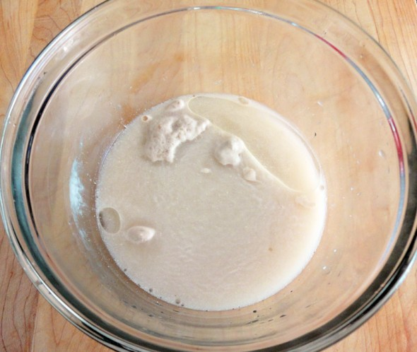
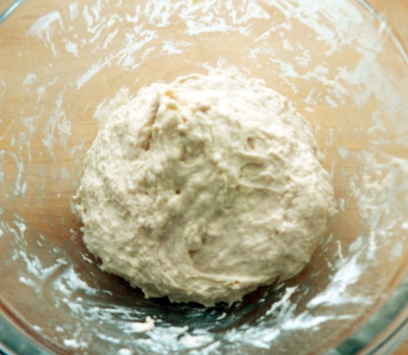
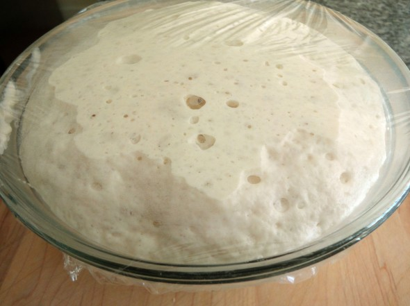
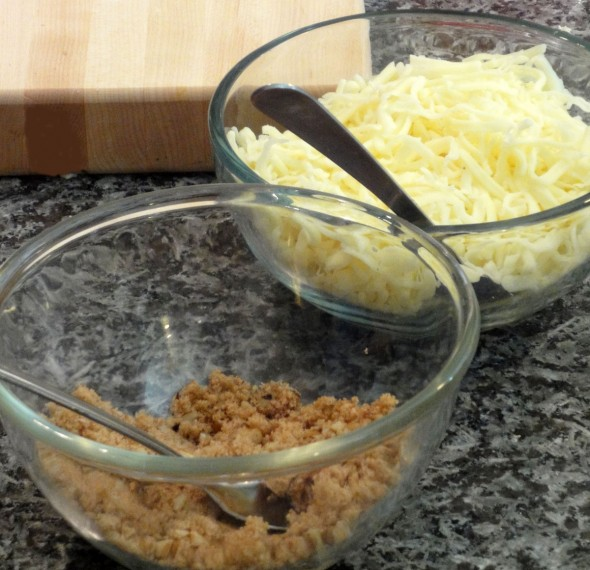
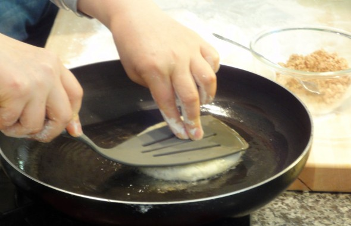
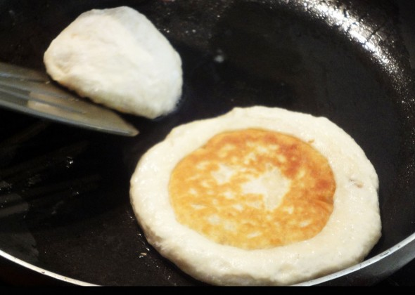
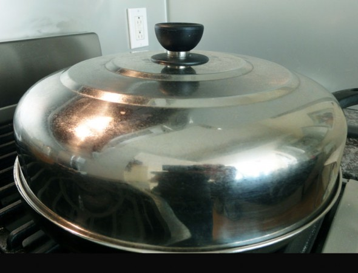

Korean Hoeddeok Recipe
Ingredients
- Flour
- Water
- Dry yeast
- Salt
- Vegetable oil
- Sugar
- Brown sugar
- Walnuts
- Cinnamon powder
Instructions
- Place 1 cup of lukewarm water into a mixing bowl.
- Add 2 tbs white sugar, 2 ts yeast, ½ ts salt, 1 tbs vegetable oil, and stir it well

- Add 2 cups of all purpose flour and mix it with a rice scoop, or by hand

- Let the dough rise. It should sit with the lid closed at room temperature for 1 hour.
- After an hour the dough will rise to double its size.
Knead it to remove the gas bubbles in the dough.


- Let it rise for another 10-20 minutes.
Make filling (for 8 hotteok):
- Mix ½ cup brown sugar, 1 ts cinnamon powder, and 2 tbs chopped walnuts in a bowl.
You could use mozzarella cheese for stuffing.
Invent your own fillings with your favorite ingredients

Let’s make hotteok!
- Knead the dough again to remove the gas bubbles.
- Place and spread about ½ cup flour on your cutting board.
- Put the dough on your cutting board and knead it.
Make it into a lump, and cut it into 8 equal-sized balls.


- Take 1 dough ball, flatten it, put some filling in the center of the dough, and then seal it to make a ball.

- Repeat this 8 times to make 8 stuffed balls.
Use some flour from the cutting board to prevent your fingers from sticking to the dough
- Heat up your non-stick pan over medium heat and add some vegetable oil.
- Place 1 ball on the pan and let it cook for 30 seconds.
- When the bottom of the dough ball is light golden brown, turn it over and press the dough with
a spatula to make a thin and wide circle (about the size of a CD).


- Let it cook about 1 minute until the bottom is golden brown.
- Turn it over again and turn down the heat very low.

- Place the lid on the pan and cook 1 more minute.
The brown sugar filling mixture will be melted to syrup!
READY TO EAT !